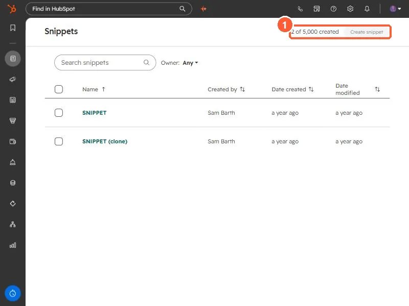
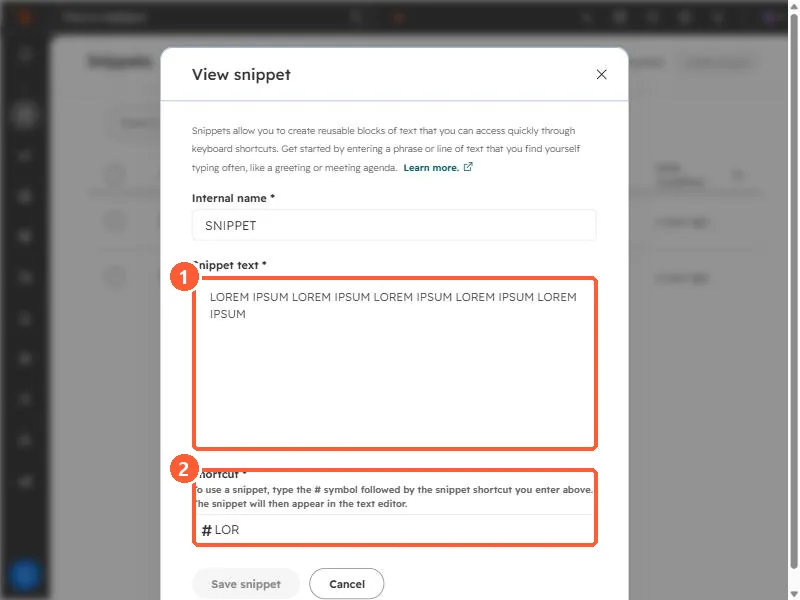

Short answer
A snippet is a reusable block of text with a shortcut. In a record's note, email, chat, or activity log, type # followed by the shortcut and pick it from the list. HubSpot's limits: 2,500 characters per snippet, 3 snippets on free accounts, and 5,000 per account on Starter, Professional, and Enterprise, where users need a Core, Sales, or Service seat. Personalization tokens in a snippet only fill in on a record's Email tab.
1. The snippets list
Open Snippets. The top right shows how many you have used: 2 of 5,000 in my demo.


2. What a snippet contains
Click a snippet to open it. Each has an internal name, the text, and a shortcut.


- Snippet text. Up to 2,500 characters. HubSpot warns that double-byte languages such as Japanese reach the limit sooner.
- Shortcut. The dialog says to type the # symbol followed by the shortcut, and the snippet appears in the text editor. Mine is
#LOR. - Personalization. Use the Personalize menu. Tokens only fill in when the snippet is used on the Email tab of a contact, company, deal, or ticket record.
3. Where it works
HubSpot lists records (contacts, companies, deals, tickets, custom objects), email templates, chat conversations, and logged activities and notes. It also works in your own inbox with the HubSpot Sales Chrome extension or Outlook add-in. For full emails rather than paragraphs, use templates.